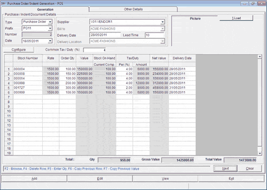

The Purchase Order/Indent Generation window is as shown.

Purchase/Indent Document Details:
Type: Select the document type from the list.
Prefix: Select the purchase order/ indent prefix from the list.
Number: The purchase order/ indent number is displayed. This is a running serial number.
Date: The current date is displayed as the date of purchase order/ indent.
Supplier: Choose the supplier on whom the purchase order/ indent is generated.
Bill To: Choose the location to which the bill has to be sent. In case of independent stores, the login company name is displayed by default.
Delivery Date: Enter the expected date of delivery. Alternatively, you may enter the number of days (lead time) in which the supplier needs to fulfil the order.
Lead Time: The number of days that the supplier gets to fulfil the order from the date of purchase order generation is displayed, if you have entered the delivery date. Alternatively, you can enter the lead time in number of days.
Delivery Location: Choose the location to ship the items.
Note: In the case of indents (chain store), list of delivery locations is populated based on the showroom catalogues and sync. rule. The list will include the names of showrooms that are linked to the selected Supplier (service location).
Picture: As you browse through the items in the grid, the image of the item will be displayed here, if available.
Load: Click to load data from specified file.
Configure: To open the Entry Column Selection.
Common Tax / Duty (%): Enter the tax/ duty as a percentage. The value entered here would be treated as the default tax percentage for all items. However, you can change the rate for individual items, if required.
The columns of the grid get filled as per the selection criteria opted. The attributes are arranged based on the order you specified in Configure. Other attributes that are displayed in the grid, irrespective of the selections, are Rate, Order Qty, Total Value, Stock On Hand, Tax/Duty, Net Value and Delivery Date. Enter the value in each column depending on the items required.
If you have chosen Normal Entry, the grid appears as shown above.
If you have chosen Size Wise Entry, each size is displayed as a column in the grid for you to enter Size Wise Order Qty.
Click here to view a sample screen. Initially the size wise entry columns would appear disabled. However, when you fill in all other details, the columns would be enabled.
Total:
Qty: Displays the total of all order quantities in the purchase order.
Gross Value: Displays the gross value of the purchase order.
Net Value: Displays the total net value after tax.
F2: To browse the values to populate the current column. If the value for Subclass1 (Style) is entered and the user presses F2 when the cursor is on the stock number, then only those stock numbers of items with the selected style are displayed in the browse. In case you enter the starting characters of the field, all values starting with those characters are displayed in the browse window. You can also use the browse facility in any sequence, for example, you can first select the brand, then the stock number, and so on.
F4: To delete the current row.
F5: To enter quantity.
F6: To copy the previous row as is and make necessary changes. This reduces the effort of re-typing all the values.
F7: To copy rate, order quantity, tax and delivery date specified in the previous row, after you enter the item specification.
{kind=link}